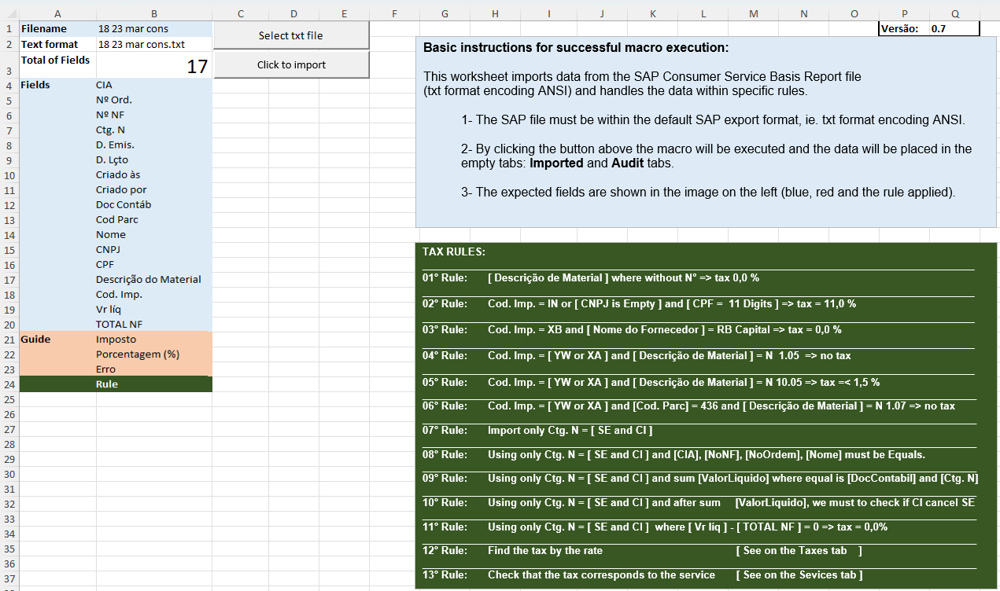

Automa��o de Auditoria Financeira com Python: Uma Experi�ncia Pr�tica
Atualmente, — comum encontrarmos processos de auditoria financeira e valida��o de notas fiscais que s�o executados manualmente ou com aux�lio de macros em VBA no Excel. Embora eficazes at� certo ponto, essas solu��es apresentam limita��es significativas em termos de escalabilidade, integra��o e manuten��o.
Este artigo compartilha minha experi�ncia na automação de um processo de auditoria de documentos fiscais, originalmente desenvolvido em VBA, e sua moderniza��o utilizando Python. A proposta foi transformar uma rotina repetitiva e sujeita a erros em uma solu��o eficiente, escal�vel e de f�cil manuten��o.
O Desafio
O processo original consistia na importa��o de arquivos texto (.txt) contendo registros financeiros, normalmente exportados de um sistema ERP (como SAP). O VBA realizava tarefas como:
- Leitura e interpreta��o dos dados.
- Valida��o de impostos aplicados.
- Verifica��o de inconsist�ncias (valores divergentes, aus�ncia de CNPJ/CPF, erros em c�digos de impostos, entre outros).
- Aplica��o de 13 regras de auditoria.
- Gera��o de um relat�rio no Excel com os resultados.
Limita��es encontradas no processo com VBA:
- Baixo desempenho em grandes volumes de dados.
- Dificuldade na manuten��o e evolu��o do c�digo.
- Pouca integra��o com bancos de dados, APIs ou outros sistemas.
- Depend�ncia total do Excel, dificultando a automação completa.
Por que migrar para Python?
Python se mostrou uma excelente alternativa por diversas raz�es:
- Escalabilidade: Capaz de lidar com grandes volumes de dados de forma eficiente.
- Integra��o: Facilita a conex�o com bancos de dados, APIs e servi�os em nuvem.
- Manuten��o: C�digo organizado, modular e version�vel.
- Automatização Completa: Possibilidade de eliminar a interven��o manual, incluindo notifica��es autom�ticas por e-mail, integra��o com dashboards e servi�os externos.
Arquitetura da Solu��o em Python
[ Arquivos TXT/CSV ] ? [ Leitura e Valida��o com pandas ] ? [ Aplica��o das Regras ] ? [ Gera��o de Relat�rios (Excel ou Dashboard) ]
Tecnologias utilizadas:
- pandas: Processamento e an�lise de dados.
- openpyxl / xlsxwriter: Gera��o de arquivos Excel.
- numpy: C�lculos e opera��es num�ricas.
- re: Express�es regulares para valida��o de textos.
- matplotlib / seaborn: Visualiza��o de dados (opcional).
- streamlit: Interface interativa para dashboards (opcional).
- sqlalchemy: Integra��o com bancos de dados (opcional).
Principais Regras de Auditoria Aplicadas
Durante o desenvolvimento da automação, foi fundamental implementar um conjunto robusto de regras para garantir a qualidade dos dados e a conformidade fiscal. Aqui apresentamos as 4 principais regras aplicadas:
Regras Principais
| Regra | Descri��o | Objetivo |
|---|---|---|
| 1 | Descri��o do material cont�m "Sem N�mero" ? imposto deve ser zero. | Verificar materiais gen�ricos ou mal cadastrados com imposto incorreto. |
| 2 | Cod. Imposto = "IN" ou (CNPJ vazio e CPF tem 9 d�gitos) ? imposto = 11%. | Detectar poss�veis cadastros incompletos que indicam reten��es maiores. |
| 8 | Agrupar notas fiscais onde Ctg. N = "SE" e os campos CIA, N� NF, N� Ordem, Nome e Total NF s�o iguais. | Detectar documentos relacionados, permitindo an�lise consolidada. |
| 11 | Verificar se uma nota n�o possui imposto (quando valor l�quido = total NF). | Identificar poss�veis erros de tributa��o (aus�ncia de imposto). |
Ao todo, foram implementadas 13 regras de auditoria que cobrem desde valida��es espec�ficas at� agrupamento e reconcilia��o de dados. O conjunto completo das regras pode ser consultado no final deste artigo.
Interface Original da Automa��o em VBA
Para contextualizar a evolu��o do processo, abaixo est� a interface da automação original desenvolvida em VBA. Note como o sistema importava arquivos TXT do SAP e aplicava as regras de auditoria de forma manual:

Interface da automação original em VBA/Excel, mostrando os 17 campos esperados e as 13 regras de auditoria implementadas.
Esta interface ilustra bem as limita��es da solu��o anterior: depend�ncia total do Excel, interface n�o intuitiva e processo semi-manual. Com Python, eliminamos essas barreiras e criamos uma solu��o completamente automatizada.
Implementa��o: Exemplo de C�digo
Leitura dos Dados
import pandas as pd
# Carregar arquivo txt delimitado por pipe '|'
df = pd.read_csv('notas_fiscais.txt', sep='|')
print(df.head())Aplica��o de uma Regra de Valida��o
Regra: Se a descri��o do material cont�m "Sem N�mero", o imposto deve ser zero.
df['Erro'] = df.apply(
lambda row: 'Imposto incorreto'
if 'Sem N�mero' in str(row['DescricaoMaterial']) and row['Imposto'] != 0
else '', axis=1
)Exporta��o do Relat�rio para Excel
df.to_excel('relatorio_auditoria.xlsx', index=False)Benef�cios Alcan�ados
| Crit�rio | Solu��o VBA | Solu��o Python |
|---|---|---|
| Volume de Dados | Limitado (~1 milh�o) | Milh�es de registros |
| Desempenho | M�dio | Alto |
| Integra��o | Limitada | APIs, Bancos, Web |
| Manuten��o | Dif�cil | Simples, modular, version�vel |
| Automatização Completa | Limitada | Sim, sem interven��o manual |
Li��es Aprendidas
- A curva de aprendizado para migrar do VBA para Python — acess�vel, especialmente para quem j� tem l�gica de programa��o.
- O ganho em produtividade, confiabilidade e escalabilidade compensa o investimento de tempo no desenvolvimento.
- Processos que antes dependiam de opera��es manuais foram transformados em rotinas totalmente automatizadas e audit�veis.
Conclus�o
Automatizar processos de auditoria financeira com Python n�o s� — vi�vel como altamente recomend�vel. A experi�ncia demonstrou que — poss�vel construir solu��es robustas, escal�veis e integr�veis, eliminando as limita��es tradicionais do VBA no Excel.
Este — um caminho sem volta para quem busca modernizar processos, aumentar produtividade e reduzir riscos operacionais.
Curiosidade: As 13 Regras Completas de Auditoria
Para quem tem interesse t�cnico, aqui est� o conjunto completo das 13 regras de auditoria implementadas na automação:
Tabela Completa das Regras de Auditoria
| Regra | Descri��o | Objetivo |
|---|---|---|
| 1 | Descri��o do material cont�m "Sem N�mero" ? imposto deve ser zero. | Verificar materiais gen�ricos ou mal cadastrados com imposto incorreto. |
| 2 | Cod. Imposto = "IN" ou (CNPJ vazio e CPF tem 9 d�gitos) ? imposto = 11%. | Detectar poss�veis cadastros incompletos que indicam reten��es maiores. |
| 3 | Cod. Imposto = "XB" e imposto igual a zero. | Validar se XB est� aplicado incorretamente sem imposto devido. |
| 4 | Cod. Imposto = "XA" ou "YW" e descri��o do material = "N 1.05" ? imposto deve ser zero. | Isentar corretamente servi�os espec�ficos dessa classifica��o. |
| 5 | Cod. Imposto = "XA" ou "YW" e descri��o do material = "N 10.05" ? imposto = 1,5%. | Validar servi�os que possuem limite m�ximo de imposto aplicado. |
| 6 | Cod. Imposto = "XA" ou "YW" e descri��o = "N 1.07" e Cod. Parceiro = 436 ? imposto deve ser zero. | Caso especial de isen��o total para parceiro e servi�o espec�ficos. |
| 7 | Ctg. N = "SE" ou "CI". | Contabilizar corretamente registros classificados como SE ou CI. |
| 8 | Agrupar notas fiscais onde Ctg. N = "SE" e os campos CIA, N� NF, N� Ordem, Nome e Total NF s�o iguais. | Detectar documentos relacionados, permitindo an�lise consolidada. |
| 9 | Somar valor l�quido para documentos agrupados por Doc Cont�bil e Ctg. N. | Validar se os valores consolidados est�o corretos entre registros. |
| 10 | Ap�s a soma, verificar se uma nota CI cancela uma nota SE (comparando datas, hor�rios e valores). | Detectar estornos, cancelamentos ou compensa��es. |
| 11 | Verificar se uma nota n�o possui imposto (quando valor l�quido = total NF). | Identificar poss�veis erros de tributa��o (aus�ncia de imposto). |
| 12 | Identificar o tipo de imposto a partir da taxa (%). | Validar se a al�quota aplicada corresponde aos impostos esperados. |
| 13 | Checar se o imposto aplicado — permitido para o n�mero de servi�o (descri��o do material). | Garantir que n�o h� impostos indevidos para determinados servi�os. |
Observa��es T�cnicas
- As regras 1 a 6 s�o espec�ficas, relacionadas a atributos individuais do documento (material, parceiro, imposto, etc.).
- As regras 7 a 10 s�o de agrupamento e reconcilia��o de dados, verificando v�nculos entre documentos (SE e CI).
- As regras 11 a 13 s�o regras finais de valida��o de imposto, seja por aus�ncia, taxa aplicada ou confer�ncia contra uma matriz de permiss�es.
Contato
- E-mail: suporte@caracore.com.br
- Site: www.caracore.com.br